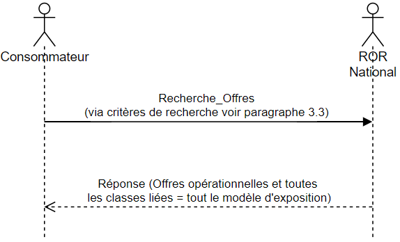

ROR ME 3.0
3.0 - ci-build
ROR ME 3.0
3.0 - ci-build
Publication Build: This will be filled in by the publication tooling
| | | |—————–|—————————-| | Endpoint | | | Header | Content-type :=Json + FHIR | | Encodage | | | Version FHIR | | | Version package | | | Publication | |
| Interaction FHIR | Search |
| Méthode http associée | GET |
| Ressource recherchée | Location |
| Construction requête de base | GET[base]/Location{?[parameters]{&_format=[mime-type]}} |
Lien vers la spécification FHIR : https://www.hl7.org/fhir/bundle.html
Si la recherche est un succès, le serveur répond :
Un header avec un code 200 OK HTTP
Un body contenant une ressource Bundle1 dont le type =
searchset.
Le bundle encapsule 0 à n ressources Location corespondant aux
critères de recherche plus les ressources incluses correspondantes
aux critères de recherche.
Le service développé renvoie les 200 premiers résultats et indique
le total trouvé dans une balise "total". Dans le cas où il n’y a
pas de résultat le service renvoie "total": 0.
Remarque : la recherche est un succès à partir du moment où la requête peut être exécutée. Il peut il y avoir 0 à n correspondances.
Plus de précision sur la spécification FHIR : https://www.hl7.org/fhir/http.html
Lien vers la spécification FHIR : https://www.hl7.org/fhir/operationoutcome.html
Si la recherche échoue, le serveur doit répondre :
Un header avec un un code erreur HTTP 4XX ou 5XX
Un body contenant une ressource OperationOutcome2 qui donne les détails sur la raison de l’échec
Remarque : l’échec d’une recherche est la non-possibilité d’exécuter la requête, ce qui est différent d’aucune correspondance à la recherche. Plus de précision sur la spécification FHIR : https://www.hl7.org/fhir/http.html
| Attribut ME 3.0 | Search parameters | Natif FHIR | Type FHIR | Description | |——————————————————————–|——————–|————|———–|——————————————————————————————————————————-| | - | _lastUpdated | Oui | Date | Date de dernière mise à jour. | | LieuRealisationOffre | | | | | | idExterneSynchro | identifier | Oui | token | L’identifiant externe de synchronisation est l’identifiant défini par le porteur d’offre pour la zone d’hébergement des lits. | | Location.identifier.type = 26 | JDV_J236 | | identifiant | identifier | Oui | token | Identifiant fonctionnel du lieu. | | Location.identifier.type = 25 | JDV_J236 | | CapaciteAccueilOperationnelle | | | | | statutCapacite | capacity-status | Non | token | Permet de préciser le statut des lits décrits. | | JDV_J188-TypeStatutCapacite-ROR issu de la TRE_R330-StatutCapacite | | nombreCapacite | nb-capacity | Non | number | Quantité de lits ou places de la capacité exprimée. |
Critères de recherches applicables à la ressource HealthcareService. | Attribut ME 3.0 | Search parameters | Natif FHIR | Type FHIR | Description | |———————|——————–|————|———–|———————————–| | - | location | Oui | reference | Référence à la ressource Location | | OffreOperationnelle | | identifiantOffre | identifier | Oui | token | Identifiant de l’offre |
Ces critères de recherche sont également applicables à la ressource Location, grâce au chainage3. Pour cela utiliser la syntaxe suivante : _has:HealthcareService:location:[NOM CRITERE]
| Attribut ME 3.0 | Search parameters | Natif FHIR | Type FHIR | Description | |——————————————————————————|———————–|————|———–|——————————————————————————————————————————————————————————————————————————————————–| | LieuRealisationOffre | | | | | | fonctionLieu | type | Oui | token | La fonction correspond à la destination d’usage du lieu. | | JDV_J198-FonctionLieu-ROR issu de la TRE_R343-FonctionLieu | | Adresse/codePostal | address-postalcode | Oui | string | Code Postal ou code postal spécifique CEDEX | | Adresse/localite | address-city | Oui | string | Localité ou Libellé du bureau distributeur CEDEX | | EquipementSpecifique | | | | | typeEquipement | equipment-type | Non | token | Les équipements spécifiques décrits sont des ressources propres de la structure ou mises à disposition dans le cadre d’une convention à la condition qu’elles soient utilisées sur site. | | JDV_J18-EquipementSpecifique-ROR issu de la TRE_R212-Equipement | | LimiteCaracteristiqueEquipement | | | | | typeCaracteristique | equipment-feature | Non | token | Indique la caractéristique de l’équipement pour laquelle une valeur limite est précisée. | | JDV_J228-TypeCaracteristiqueEquipement-ROR | | valeurLimite | limit-value | Non | quantity | Correspond à la valeur extrême associée à une caractéristique de l’équipement | | JDV_J37-UcumUniteTemps issu de la TRE_R247-UcumUniteMesure | | CapaciteAccueilOperationnelle | | | | | natureCapacite | capacity-type | Non | token | Indique si la capacité est exprimée en lits ou en places. | | JDV_J187-NatureCapacite-ROR issu de la TRE_R329-NatureCapacite | | temporaliteCapacite | temporality-capacity | Non | token | Indique le moment où cette capacité sera effective. Il est ainsi possible de décrire la situation immédiate, ou de fournir des informations prospectives de capacités, prenant notamment en compte les entrées et sorties déjà identifiés de patients. | | JDV_J189-TemporaliteCapacite-ROR issu de la TRE_R331-Temporalite | | genreCapaciteDispo | gender-capacity | Non | token | Genre des patients qui peuvent être installés dans des lits disponibles. | | JDV_J190-GenreCapacite-ROR issu de la TRE_R332-GenreCapacite | | typeFermetureCapacite | capacity-closing-type | Non | token | Indique le statut de lits fermés, permettant d’identifier le nombre de lits fermés qui peuvent être réactivés en cas de besoin et le nombre de ceux qui ne peuvent pas l’être. | | JDV_J191-TypeFermetureCapacite-ROR issu de la TRE_R333-TypeFermetureCapacite | | typeLitSupplementaire | additional-bed-type | Non | token | Indique le statut de lits supplémentaires, pour identifier le nombre de lits supplémentaires déjà mobilisés et, par typologie de mobilisation possible, le nombre de lits qui ne le sont pas encore. | | JDV_J192-TypeLitSupplementaire-ROR issu de la TRE_R334-TypeLitSupplementaire | | typeCrise | crisis-type | Non | token | Indique le type de crise qui permet de mobiliser le nombre de lits supplémentaires décrits. | | JDV_J194-TypeCrise-ROR issu de la TRE_R336-TypeCrise | | dateMAJCapacite | capacity-update | Non | date | Date à laquelle la capacité d’accueil a été mise à jour dans la source. | | CapaciteHabitation | | | | | | typeHabitation | residential-type | Non | token | Le type d’habitation renseigne sur la taille et le nombre de pièces d’un logement. | | JDV_J32-TypeHabitation-ROR issu de la TRE_R242-TypeHabitation | | nbHabitation | residential-number | Non | number | Nombre d’habitations du même type. | | CapacitePriseCharge | | affectationTemporaire | temporary-assignement | Non | token | L’affectation temporaire permet de réserver tout ou partie des lits d’une zone d’hébergement pour des patients selon qu’ils soient –ou non- concernés par une pathologie (Covid+, Covid-, …) ou un évènement (catastrophe naturelle, attentat, …). | | JDV_J95-ModeExercice-RASS issu de la TRE_R23-ModeExercice |
| Lien vers spécification | Description | |———————————————————————————————————|————————————————-| | Paramètres et modificateurs : inclusion | | _revinclude | https://www.hl7.org/fhir/search.html#revinclude | | Indique que les ressources qui font référence à HealthcareService doivent être incluses dans la réponse | | _include | https://www.hl7.org/fhir/search.html#include | | Indique que les ressources référencées par HealthcareService doivent être incluses dans la réponse | | :iterate | | Le processus d’inclusion peut être itératif si le modificateur :iterate est ajouté dans la requête. | | Paramètres et modificateurs : chainage inversé | | | _has | http://hl7.org/fhir/search.html#has | | Permet d’utiliser les paramètres de recherche des ressources faisant référence à la ressource Location | | Paramètres et modificateurs : réponses | | _count | https://www.hl7.org/fhir/search.html#count | | Indique le nombre souhaité par le consommateur de résultat par page. | | RG_RECH_52 : Par défaut la recherche retourne 200 résultats maximum par page. | | _sort | http://hl7.org/fhir/search.html#_sort | | Indique dans quel ordre renvoyer les résultats | | Préfixe de comparaison | | | gt, lt, ge, le, sa & eb | https://www.hl7.org/fhir/search.html#date | | Permet de faire des recherches comparatives |
[Description du scénario :]{.underline} un consommateur souhaite récupérer l'ensemble des données capacitaires de France afin de mettre à jour son système
[Requête :]{.underline}
get[BASE]/Location?_revinclude=HealthcareService:location
[Requête expliquée :]{.underline}
get[BASE]/Location?_revinclude=HealthcareService:location #inclus les HealthcareService qui référencent les Location
[Réponse “simplifiée” :]{.underline}
HTTP 200 OK
resourceType: Bundle
type: searchset
total: 4
Location1 (match) UE1(include)
Location2 (match) UE2(include)
Location3 (match) UE3(include)
Location4 (match) UE3(include)
[Description du scénario :]{.underline} un consommateur souhaite mettre à jour dans son système les données de capacité sur un lieu de prise en charge = Location1
[Requête :]{.underline}
get[BASE]/Location?identifier=Location1&_revinclude=HealthcareService:location
[Requête expliquée :]{.underline}
get[BASE]/Location?identifier=Location1 #critère de recherche sur l’identifiant technique du lieu de prise en charge
&_revinclude=HealthcareService:location #inclus les HealthcareService qui référencent les Location
[Réponse “simplifiée” :]{.underline}
HTTP 200 OK
resourceType: Bundle
type: searchset
total: 1
Location1 (match) UE1(include)
[Description du scénario :]{.underline} un consommateur souhaite mettre à jour dans son système les données de capacité sur plusieurs lieux de prise en charge = Location1 ou Location2
[Requête :]{.underline}
get[BASE]/Location?identifier=Location1,Location2&_revinclude=HealthcareService:location
[Requête expliquée :]{.underline}
get[BASE]/Location?identifier=Location1,Location2 #critère de recherche sur l’identifiant technique du lieu de prise en charge
&_revinclude=HealthcareService:location #inclus les HealthcareService qui référencent les Location
[Réponse “simplifiée” :]{.underline}
HTTP 200 OK
resourceType: Bundle
type: searchset
total: 2
Location1 (match) UE1(include)
Location2 (match) UE2(include)
[Description du scénario :]{.underline} un consommateur souhaite mettre à jour dans son système les données de capacité
à partir d'une date de mise à jour >= 06/11/2022-15h00
[Requête :]{.underline}
get[BASE]/Location?_lastUpdated=ge2022-11-06T15:00&_revinclude=HealthcareService:location
[Requête expliquée :]{.underline}
get[BASE]/Location?_lastUpdated=ge2022-11-06T15:00 #critère de recherche sur la date de mise à jour/ge=greater or equal
&_revinclude=HealthcareService:location #inclus les HealthcareService qui référencent les Location
[Réponse “simplifiée” :]{.underline}
HTTP 200 OK
resourceType: Bundle
type: searchset
total: 1
Location1 (match) UE1(include)
[Prérequis :]{.underline} un consommateur recherche au préalable une offre de santé correspondant à ses critères via le service de recherche en 2.4. Le service de recherche envoie les identifiants des offres correspondant aux critères.
[Description du scénario :]{.underline} un consommateur souhaite connaitre la situation des capacités pour les offres identifiées via le service 2.4 = UE1 ou UE2 ou UE3
[Requête :]{.underline}
get[BASE]/Location?_has:HealthcareService:location:identifier=UE1,UE2,UE3&_revinclude=HealthcareService:location
[Requête expliquée :]{.underline}
get[BASE]/Location?_has:HealthcareService:location:identifier=UE1,UE2,UE3 #critère de recherche sur l’identifiant de l’offre. Utilisation _has (reverse chaining) car c’est HealthcareService qui fait référence à Location.
&_revinclude=HealthcareService:location #inclus les HealthcareService qui référencent les Location
[Réponse “simplifiée” :]{.underline}
HTTP 200 OK
resourceType: Bundle
type: searchset
total: 4
Location1 (match) UE1(include)
Location2 (match) UE2(include)
Location3 (match) UE3(include)
Location4 (match) UE3(include)

| Location v3.0 | |||||||||||||
|---|---|---|---|---|---|---|---|---|---|---|---|---|---|
| ID | Location1 | Location2 | Location 3 | ||||||||||
| dateModification | 2022-11-07T14:38 | 2022-11-06T14:37 | 2022-11-06T14:37 | ||||||||||
| LieuRealisationOffre | |||||||||||||
| idExterneSynchro | Toto | Titi | Tata | ||||||||||
| idPointSaisie | UE1 | UE2 | |||||||||||
| UF1 | |||||||||||||
| communeCOG | |||||||||||||
| Adresse | 27 Rue du Faubourg Saint-Jacques | 100 Bd du Général Leclerc | 47-83 Bd de l’Hôpital | ||||||||||
| Adresse/codePostal | 75014 | 92110 | 75013 | ||||||||||
| Adresse/localite | Paris | Clichy | Paris | ||||||||||
| EquipementSpecifique | |||||||||||||
| typeEquipement | Table de bloc opératoire obésité (poids entre 150 et 250 kg) - bariatrique | Coronaroscanner | Angioscope + Coronaroscanner | ||||||||||
| typeCaracteristique | |||||||||||||
| valeurLimite | |||||||||||||
| CapacitePriseCharge | |||||||||||||
| affectationTemporaire | Aucune | Aucune | Aucune | Aucune | Aucune | Aucune | Covid+ | Aucune | Aucune | Aucune | Aucune | Covid+ | Covid+ |
| natureCapacite | Lit | Lit | Lit | Lit | Lit | Lit | Lit | Lit | Lit | Lit | Lit | Lit | Lit |
| statutCapacite | Installé | Disponible | Occupé | Fermé | Installé | Disponible | Disponible | Installé | Disponible | Disponible | Disponible | Disponible | Disponible |
| temporaliteCapacite | Courante | Courante | Courante | Courante | Courante | Courante | Courante | Courante | Courante | Courante | Courante | Courante | Courante |
| nombreCapacite | 2 | 1 | 1 | 1 | 14 | 10 | 4 | 24 | 10 | 4 | 6 | 2 | 2 |
| dateMAJCapacite | 07/11/2022 - 14:37 | 07/11/2022 - 14:37 | 07/11/2022 - 14:37 | 01/11/2022 - 12:37 | 06/11/2022 - 14:37 | 06/11/2022 - 14:37 | 06/11/2022 - 14:37 | 06/11/2022 - 14:37 | 06/11/2022 - 14:37 | 06/11/2022 - 14:37 | 06/11/2022 - 14:37 | 06/11/2022 - 14:37 | 06/11/2022 - 14:37 |
| genreCapaciteDispo | Indéterminé | Indéterminé | Indéterminé | Indéterminé | Indéterminé | Indéterminé | Indéterminé | Indéterminé | Homme | Femme | Indéterminé | Homme | Femme |
| typeFermetureCapacite | |||||||||||||
| typeLitSupplementaire | |||||||||||||
| typeCrise |
| HealthcareService 3.0 | ||||
|---|---|---|---|---|
| ID | UE1 | UE2 | UE3 | UE4 |
https://www.hl7.org/fhir/search.html#has ↩